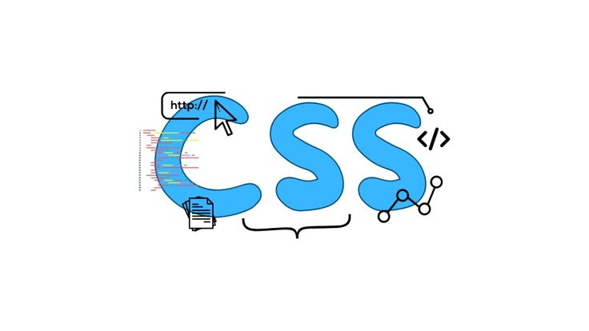
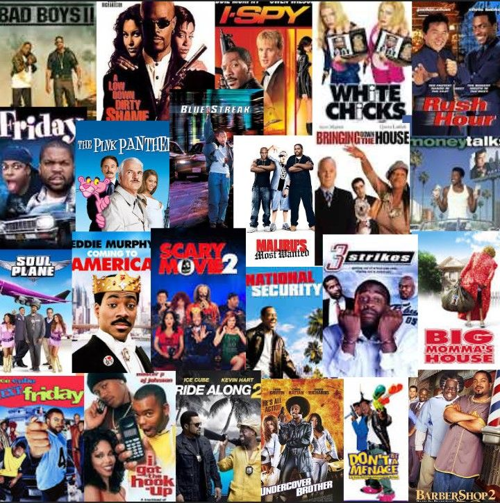
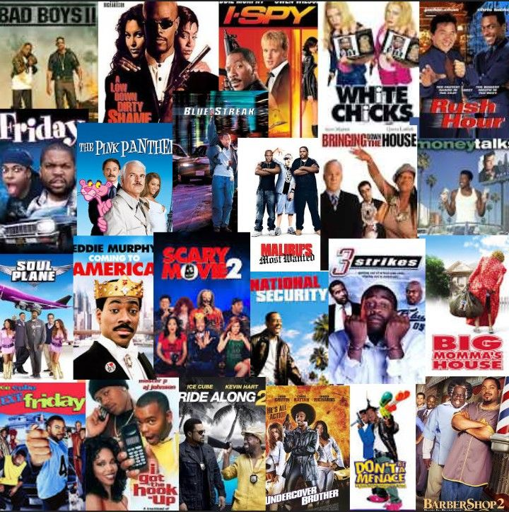

I am Hasset Adugna, a passionate and enthusiastic aspiring web developer, just beginning my journey in this field and creating my very first web projects. Having recently entered this field, I am deeply motivated to learn, grow, and improve my skills.
Currently, I am a software engineering student, exploring different areas through various courses to discover the path that best fits my interests and strengths. I am focused on developing a strong foundation in programming, problem-solving, and software design. I am excited to apply my knowledge to real projects, continuously improve my skills, and contribute meaningfully to the world of web development.
My goal is to:
- Build a solid foundation in web development by mastering:
-
- 
Work on real projects to apply my knowledge and gain practical experience.
Explore different areas of software engineering to find the path that best fits my interests.
Continuously learn and improve my skills to stay updated with industry trends.
Continuously grow as a developer and eventually be able to contribute to professional web development projects.
My Github repositories:
Here are some of my GitHub repositories that showcase my projects and coding practices:
| Project Name |
Description |
Link |
| My-Portfolio |
A personal portfolio website built using HTML to showcase my skills and projects. |
click |
| Nexus_Tutorial_DSA |
My practice repository containing solutions to various coding problems on LeetCode, HackerRank, Codeforces. |
click |
| my-first-project |
First GitHub project showcasing my initial experience with Git, Git Bash, and version control concepts. |
click |
Hobbies:
In my free time, I enjoy a variety of activities that keep me engaged and inspired. Some of my hobbies include:
- Spending quality time with people
- Watching movies
- Traveling to new places and exploring
- Experimenting with cooking
Movies, in particular, have shown me the extent of what technology can do and inspired me to explore new possibilities. I believe one of the most exciting aspects of technology is that the skills I’m developing in web development and IT are versatile, valuable, and applicable in many areas, no matter where my interests or career path take me.
 
